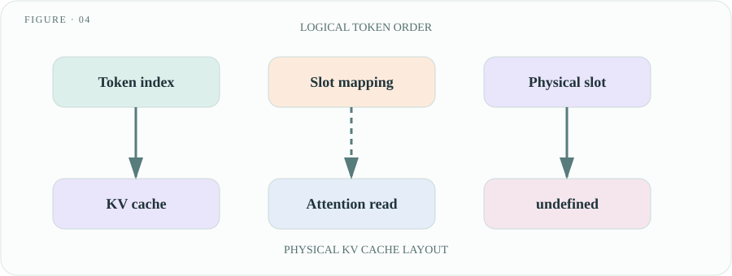

上一章咱们从思想层面理解了 PagedAttention。这一章咱们钻进实现细节，看看 Block Table 如何在 GPU kernel 中工作，以及 Copy-on-Write、Block Size 选择这些工程问题。

INTERACTIVE LAB
动手分配 KV Cache Blocks
观察逻辑上连续的 token 如何映射到不要求连续的物理块。这里使用教学用的 4-token block。
已分配 2 / 6 个块 · 尾块剩余 0 个 token 槽位。
4.1 Slot Mapping：GPU Kernel 的"翻译官"
GPU 上的 Attention kernel（比如 Flash Attention）预期接收连续的 K/V 张量。但 PagedAttention 的物理 Block 是分散的。怎么办？加一层映射——Slot Mapping。
slot_mapping 数组（大小 = total_physical_tokens）:
逻辑 token 位置 → 物理 KV Cache slot
示例:
block_7[0]: → slot_mapping[7*16+0] = 0 (request A, token 0)
block_7[1]: → slot_mapping[7*16+1] = 1 (request A, token 1)
...
block_3[0]: → slot_mapping[3*16+0] = 16 (request A, token 16)
block_3[1]: → slot_mapping[3*16+1] = 17 (request A, token 17)
vLLM 的 Triton kernel 在读取 KV cache 时，写入路径使用 slot mapping 将当前 token 的 K/V 写入正确的物理 slot，再确定该读取哪些 K/V 值。
# 简化版 Triton kernel
@triton.jit
def paged_attention_kernel(
key_cache, value_cache, # 物理散布的 KV cache
slot_mapping, # 物理→逻辑映射
block_tables, # 每个请求的 block table
output, # Attention 输出
...
):
pid = tl.program_id(0)
# 通过 slot_mapping 和 block_tables 找到正确的 K/V
block_id = block_tables[request_id][logical_pos // BLOCK_SIZE]
offset = logical_pos % BLOCK_SIZE
k = key_cache[block_id, offset]
v = value_cache[block_id, offset]
# 正常计算 attention...
4.2 Copy-on-Write：零拷贝前缀共享
这是 PagedAttention 的另一大亮点。当多个请求共享同一个前缀（比如相同的 system prompt），它们的 Block Table 可以指向相同的物理 Block：
请求 A 的 system prompt (1024 tokens = 64 blocks):
Block Table: [7, 3, 12, 5, ..., 88, 42] (64 个物理 block)
请求 B 共享同样的 system prompt:
Block Table: [7, 3, 12, 5, ..., 88, 42, ...（后续独有 block）]
↑ 前 64 个指向相同物理 block，不复制数据！
只有当请求 B 的生成覆盖了前缀内容时，才触发 Copy-on-Write:
Block Table: [7, 3, 12, 5, ..., 88, 99] ← 最后一个变为新 block_99这意味着：
- 10 个请求共享同样的 1024 token system prompt → 只存一份 KV cache
- 节省显存 = 10 × (1024 个 token 的 KV cache 大小) ≈ 10 × 0.5 GB = 5 GB
- 而且没有数据拷贝——只有 Block Table 的指针复制
V1 改进：V0 的前缀缓存需要拷贝 KV 数据；V1 改成纯指针重定向，CPU 开销降低 90%。这是 V1 架构升级带来最显著的优化之一。
4.3 Block Size 的权衡
Block 越大还是越小好？这是一个经典的工程权衡：
| Block Size | 优势 | 劣势 | 适用场景 |
|---|---|---|---|
| 8 tokens | 更细粒度，内部碎片最少（<2%） | Block 数量翻倍 → Block Table 内存开销大 | 长短 prompt 混合严重 |
| 16 tokens（默认） | 内部碎片 ~4%，Block Table 开销适中 | 平衡方案 | 绝大多数场景 |
| 32 tokens | Block Table 开销小 | 内部碎片增大（~12%） | 长 prompt 为主、显存充裕 |
vLLM 默认选 16 有它的道理：它是 2 的幂，GPU 内存对齐好；兼顾碎片和开销；而且 16 个 token 的 KV 数据正好适合常见的 GPU cache line 大小。
4.4 PagedAttention 与 Flash Attention 的配合
PagedAttention 负责显存管理，Flash Attention 负责计算优化。两者并非竞争关系，而是互补：
- Flash Attention V2：将 Attention 计算分块，减少 HBM 读写。但它要求 K/V 连续存储。
- PagedAttention kernel：在 Flash Attention 读取 K/V 之前，先通过 Block Table 找到正确的物理位置，然后在 block 内部做连续的 Flash Attention。
vLLM 的 PagedAttention kernel 实际上是 Flash Attention 的"分页版本"——每个 block 内部是连续的，block 之间通过 Block Table 跳转。
4.5 一个完整的分配-使用-回收流程
# 1. 新请求到达
request = Sequence(id="req-001", prompt_tokens=[...])
# 2. 调度器计算需要多少 block
num_blocks = ceil(len(prompt_tokens) / BLOCK_SIZE)
# 3. 从 free pool 取 block
blocks = free_pool.allocate(num_blocks)
block_tables["req-001"] = blocks # e.g., [7, 3, 12]
# 4. GPU 推理（prefill 阶段）
# Attention kernel 遍历 block_tables["req-001"]，找到物理 K/V 并计算
# 5. Decode 阶段逐步分配新 block
for step in range(max_tokens):
output_token = model.forward(...)
if current_block.is_full():
new_block = free_pool.allocate(1)[0]
block_tables["req-001"].append(new_block)
# 6. 请求完成，归还所有 block
free_pool.free(block_tables["req-001"])踩坑提醒：PagedAttention 虽然解决了碎片问题，但如果 free block pool 耗尽（所有物理 block 都被占满），新请求仍然会排队。生产环境要监控 num_blocks_free 指标，确保有足够的空闲 block。
4.6 变体：vAttention 和 RadixAttention
PagedAttention 发表后，陆续出现了一些变体和改进：
vAttention（Microsoft）：直接使用 CUDA 驱动层的虚拟内存 API（cuMemCreate），让 GPU 页表自动处理映射，不需要应用层 Block Table。好处是兼容现有 Attention kernel，不足是细粒度共享不如 PagedAttention。
RadixAttention（SGLang）：在 PagedAttention 基础上，用 Radix Tree（基数树）自动检测共享前缀。多个请求的系统 prompt 即使不完全相同，也能复用公共部分。
好了，PagedAttention 的两章结束。下一章咱们看 Continuous Batching——PagedAttention 的最佳搭档，怎么让 GPU 永远不闲着。
参考资料与证据
- vLLM PagedAttention 实现write_to_paged_cache
- vLLM KV Cache 设计Definitions；Allocation